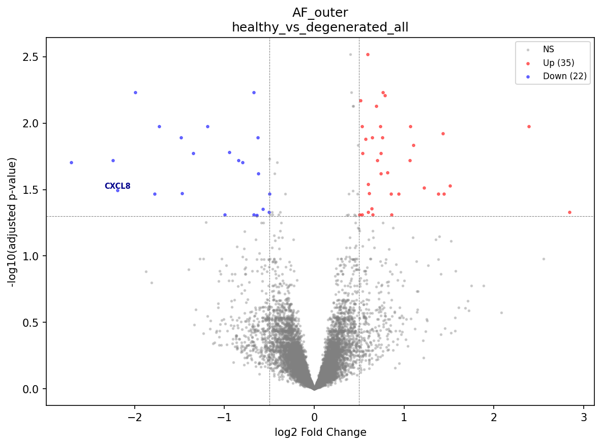
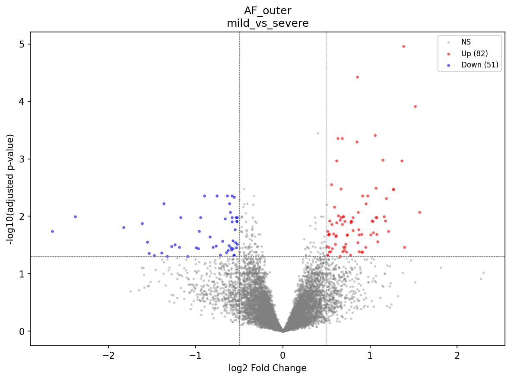
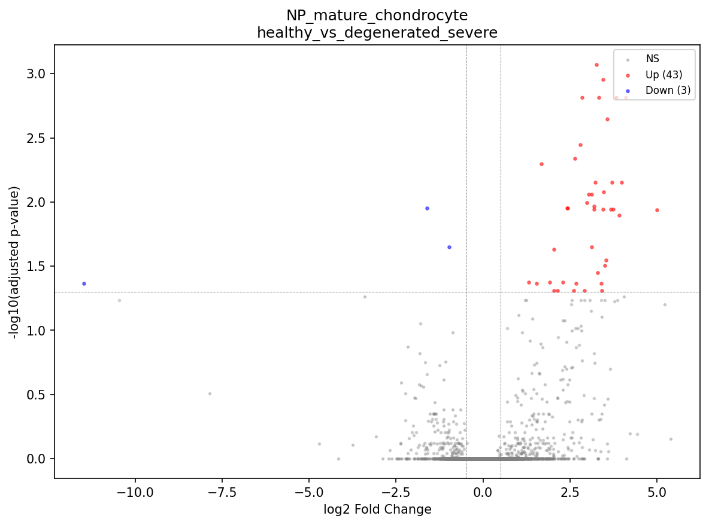
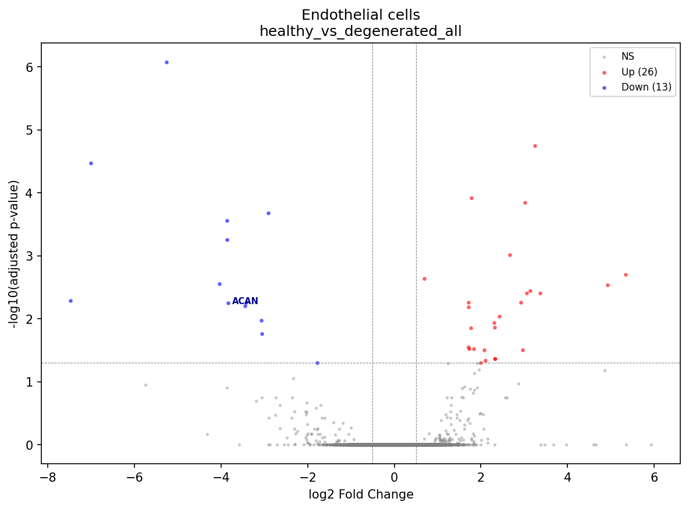
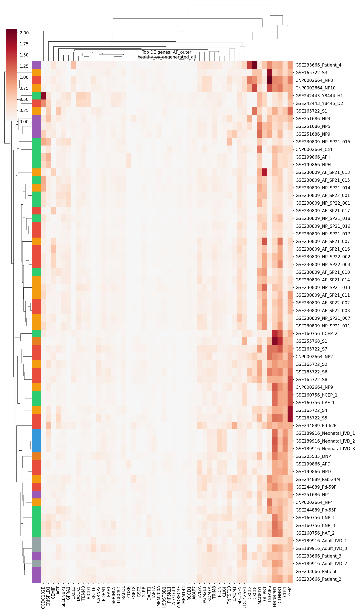
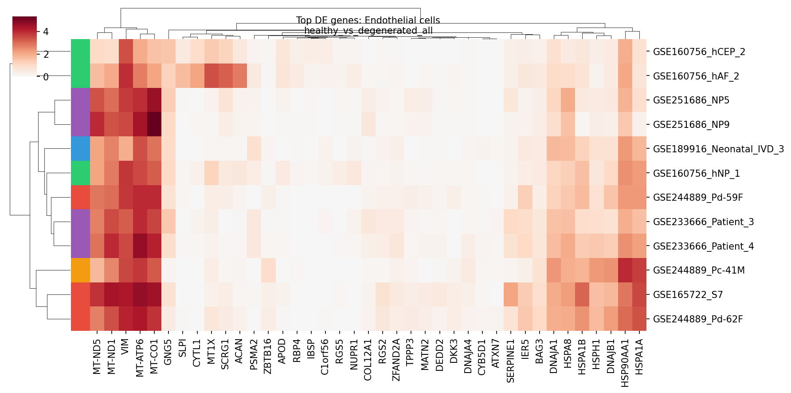

Module 06: Differential Analysis Report
Generated: 2026-03-05
Skipped (underpowered)
128
Significant DE genes
5,328
Composition changes (padj<0.05)
0 / 58
Method
pyDESeq2 (pseudobulk)
1. Cell Composition Analysis
No significant composition changes at padj < 0.05. Four nominally significant trends (p < 0.05, padj > 0.05):
- NP_mature_chondrocyte proportion decreases in healthy → degenerated_all (57% → 26%, p=0.028) and healthy → degenerated_severe (57% → 10%, p=0.036)
- AF_mechanical_stress proportion increases in healthy → degenerated_severe (1.7% → 41%, p=0.044)
- AF_outer proportion increases in mild → severe (56% → 77%, p=0.046)
All fail FDR correction due to multiple testing across 58 cell type x comparison combinations. The NP_mature_chondrocyte trend is consistent with the known biology of disc degeneration (loss of chondrocyte-like cells).
2. Differential Expression Summary
| Cell Type | Comparison | Up | Down | Total DE |
| AF_inner | mild_vs_severe | 12 | 1 | 13 |
| AF_outer | healthy_vs_degenerated_all | 35 | 22 | 57 |
| AF_outer | healthy_vs_degenerated_mild | 2 | 11 | 13 |
| AF_outer | healthy_vs_degenerated_severe | 106 | 97 | 203 |
| AF_outer | mild_vs_severe | 82 | 51 | 133 |
| Endothelial cells | healthy_vs_degenerated_all | 26 | 13 | 39 |
| Endothelial cells | healthy_vs_degenerated_severe | 21 | 14 | 35 |
| Endothelial cells | healthy_vs_herniated | 137 | 277 | 414 |
| NP_mature_chondrocyte | healthy_vs_degenerated_all | 2 | 0 | 2 |
| NP_mature_chondrocyte | healthy_vs_degenerated_mild | 2 | 1 | 3 |
| NP_mature_chondrocyte | healthy_vs_degenerated_severe | 43 | 3 | 46 |
| NP_mature_chondrocyte | healthy_vs_herniated | 1,915 | 2,401 | 4,316 |
| NP_mature_chondrocyte | mild_vs_severe | 19 | 4 | 23 |
| NP_notochordal | mild_vs_severe | 3 | 2 | 5 |
| NP_stressed_degenerative | mild_vs_severe | 17 | 3 | 20 |
| Tcm/Naive helper T cells | mild_vs_severe | 2 | 1 | 3 |
| Tem/Trm cytotoxic T cells | mild_vs_severe | 1 | 2 | 3 |
Caution: NP_mature_chondrocyte | healthy_vs_herniated has 4,316 DE genes. This is likely inflated due to:
(1) herniated samples come from only 2 studies (GSE233666, GSE251686), so study effects may dominate;
(2) herniated tissue undergoes mechanical disruption + acute inflammation, creating a fundamentally different transcriptomic state.
The top "DOWN" genes include ribosomal proteins (RPL17, RPL36A, RPP21) — a hallmark of technical batch effects or extreme stress responses. Interpret with caution.
3. Key Biological Findings
3a. AF_outer: Healthy vs Degenerated (57-203 DE genes)
Most informative comparison. Powered by 11 studies contributing AF samples.
- UP in degeneration: KRT16 (+2.8 LFC), CEMIP (+2.4), FGF18 (+1.5), S100P (+3.0 in severe) — stress/matrix remodeling markers
- DOWN in degeneration: CXCL3/CXCL2/CXCL8 chemokines, TNFSF10 (TRAIL), CRISPLD1, AGT
- CEMIP (cell migration-inducing hyaluronidase) upregulation is consistent with extracellular matrix degradation in IVD degeneration
- Mild vs severe progression: AMTN, E2F2, HHIP, TROAP, UBE2C, CDC20 all DOWN in severe — proliferation and hedgehog signaling genes decrease with severity. MT-ND6/MT-ATP8 UP suggests mitochondrial stress.



3b. NP_mature_chondrocyte: Degeneration (2-46 DE genes)
Low gene counts for healthy_vs_degenerated_all (2 genes) suggest underpowering or heterogeneity. The severe comparison (46 genes) is more informative.
- UP in severe degeneration: GPR68 (+5.0), UBE2C (+4.1), TROAP (+4.0), HMMR (+3.8), ANLN (+3.7) — proliferation and cell cycle genes
- DOWN: HBB (-11.5, likely contamination artifact)
- Mild vs severe: CXCL1/2/3 (+3.1–3.8), TNF (+2.5), MDK (+2.7), PMAIP1 (+2.3) — inflammatory chemokines and apoptosis genes UP in severe
- The CXCL1/2/3 + TNF signature is a classical inflammatory/catabolic signature in IVD degeneration


3c. Endothelial cells: Healthy vs Degenerated (39 DE genes)
- DOWN in degeneration: CYTL1 (-7.5), IBSP (-7.0), RGS5 (-5.3), ACAN (-3.4) — cartilage/ECM markers suggest these may be contaminating NP/AF cells misclassified as endothelial
- UP in degeneration: CYB5D1 (+5.3), HMOX1 (+4.0 in severe) — oxidative stress response
- Note: The presence of ACAN, IBSP, CYTL1 in "endothelial" cells suggests possible annotation issues for this population

3d. NP Subtypes: Mild vs Severe
- NP_stressed_degenerative (20 DE genes): enriched in catabolic/stress genes in severe disease
- NP_notochordal (5 DE genes): very few changes, but this subtype is already rare in adult tissue
4. Heatmaps


5. Positive Controls
- ADAMTS5 (aggrecanase, expected UP in degeneration): Found in NP results, log2FC=+0.92, but padj=1.0 (not significant). Direction is correct but underpowered.
- MMP13 (collagenase, expected UP in degeneration): Not found in NP results — may not pass minimum expression threshold.
- CEMIP (hyaluronidase): Significantly UP in AF_outer degeneration (+2.4 LFC, padj=0.011). Strong positive control.
- TNF: Significantly UP in NP_mature_chondrocyte mild_vs_severe (+2.45, padj=0.043). Expected inflammation marker.
- CXCL1/2/3: All significantly UP in NP severe degeneration (+3.1-3.8 LFC). Classical inflammatory chemokines in IVD disease.
6. Skipped Comparisons (128 total)
Most cell type x comparison combinations were underpowered (<3 samples in one condition). Key gaps:
- CEP cell types: All comparisons skipped — only 2-3 CEP samples total per condition
- NP_fibrocartilaginous: All comparisons skipped — rare cell type with insufficient samples
- Immune subtypes (except T cells in mild_vs_severe): Most skipped — immune cells are rare in IVD tissue
- NP_notochordal, NP_stressed_degenerative: Only mild_vs_severe powered — insufficient healthy samples for these subtypes
7. Human Checkpoint Questions
- Do the composition trends (NP_mature_chondrocyte loss, AF_mechanical_stress increase) make biological sense despite not reaching FDR significance?
- Are the AF_outer DE results (CEMIP, CXCL chemokines, KRT16) consistent with known IVD degeneration biology?
- The NP_mature_chondrocyte healthy_vs_herniated comparison has 4,316 DE genes — should this be flagged as likely confounded by study effects and excluded from downstream interpretation?
- The "endothelial" DE genes (ACAN, IBSP, CYTL1 DOWN) suggest possible misannotation. Should we revisit the annotation for this population?
- Is there evidence of study batch dominating the results? (Herniated comparison strongly suggests yes; degeneration severity comparisons seem cleaner.)
- Should any DE results feed back into annotation refinement before proceeding to Module 07 (Interpretation)?
- Are there additional comparisons to define (e.g., age-stratified, sex-stratified)?